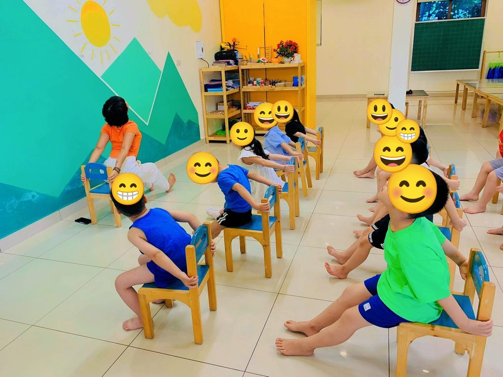
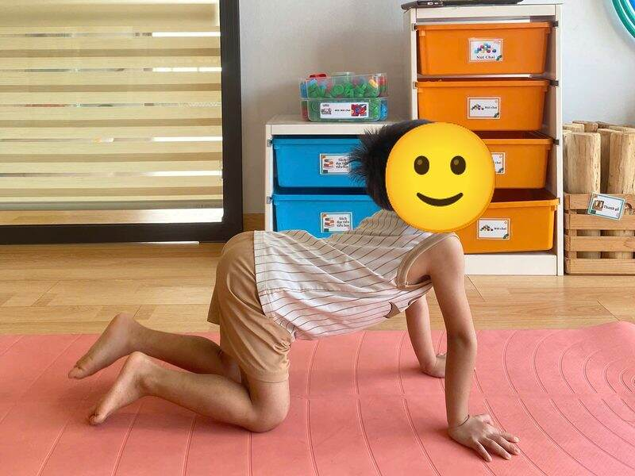
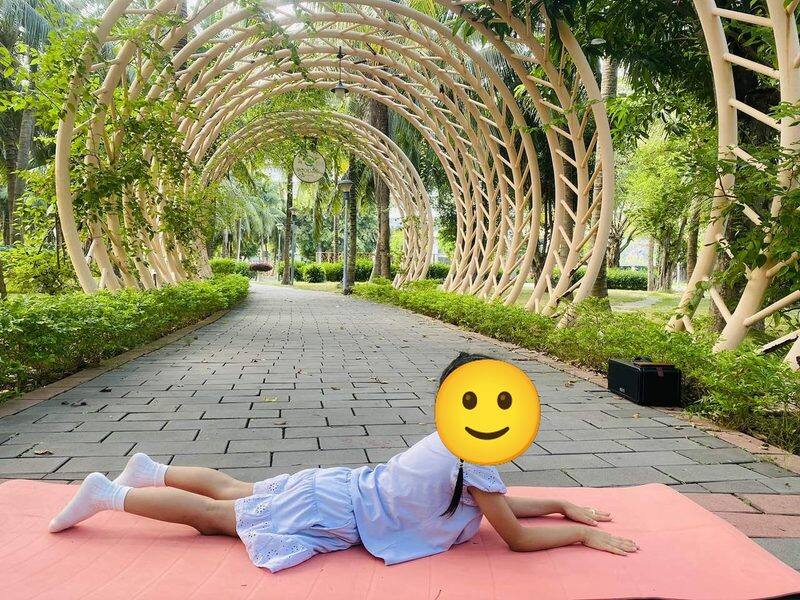
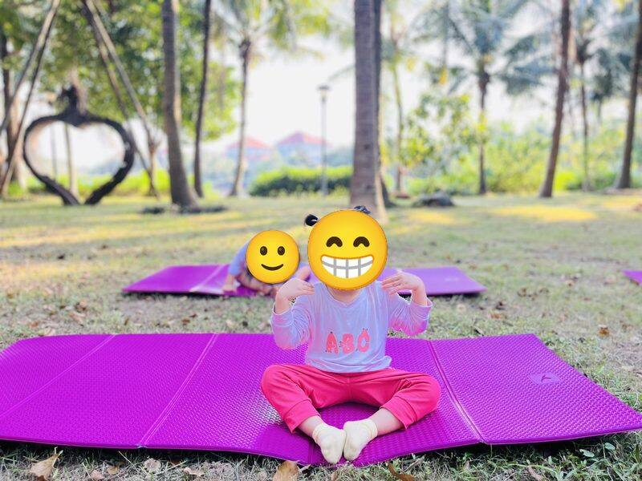
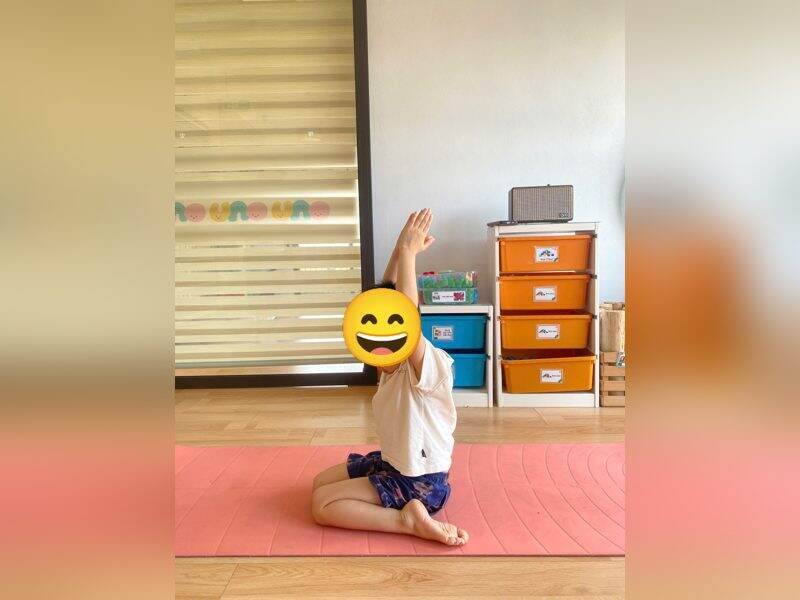
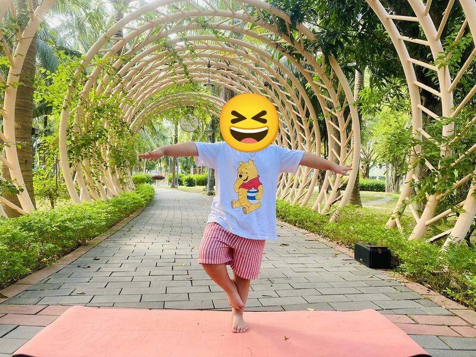
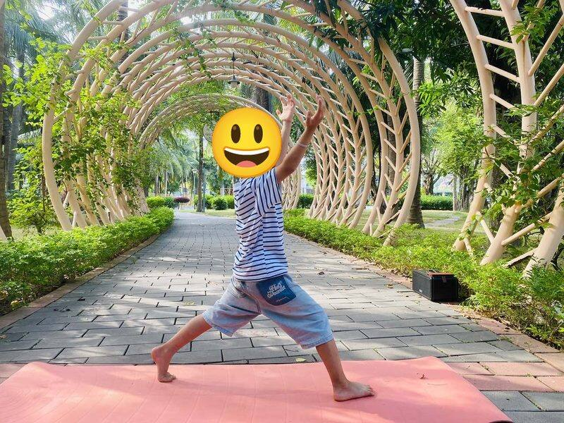
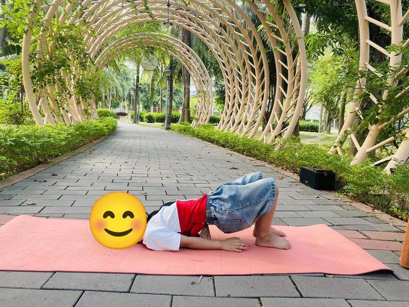
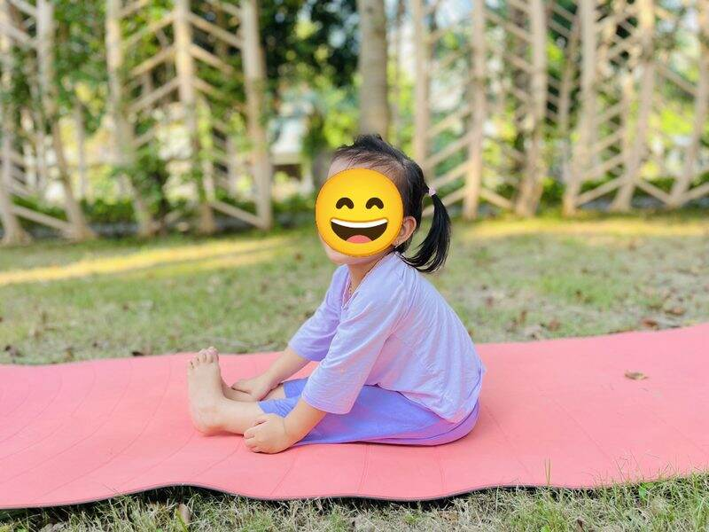
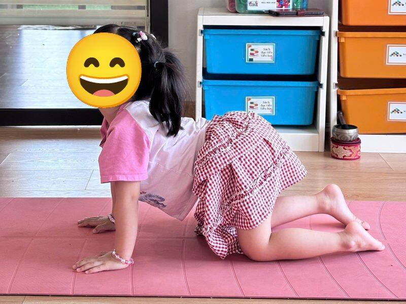

Yoga trẻ em · Vận động
Ứng dụng yoga cân bằng phục hồi cho bé ngồi nhiều, hay gù lưng: trò chơi giúp con đứng ngồi thẳng nhẹ nhàng

Con ngồi học. Một lúc sau, cằm đã gần chạm vở. Vai rụt lên. Lưng cong như con tôm.
Bố mẹ nhắc: “Ngồi thẳng lên con!”. Con ngồi thẳng được chừng một phút. Rồi đâu lại vào đấy.
Sophia gặp cảnh này nhiều lắm, ở nhà phụ huynh, ở lớp mầm non, cả trong các buổi tập. Bài này cô chia sẻ cách nhìn về dáng ngồi của trẻ, cách kê một góc học vừa với con, và những tư thế, trò chơi giúp con vận động nhiều hơn. Có video ngắn để bố mẹ mở cho con tập theo. Cô nói trước một điều: lưng con khỏe lên nhờ được chuyển động, chứ không nhờ bị nhắc.
- Con ngồi bao lâu
- Vì sao con hay gù
- Cái đầu nặng bao nhiêu
- Góc học vừa với con
- Video 5 động tác
- 8 tư thế
- Trò chơi 1 phút
- Lưng khỏe từ cả ngày
- Cho cô giáo mầm non
- Khi nào đi khám
Con ngồi bao lâu mỗi ngày?
Thử đếm một ngày của con xem. Ngồi ăn sáng. Ngồi xe đến trường. Ngồi học. Ngồi ăn trưa. Ngồi xe về. Ngồi làm bài. Ngồi xem tivi. Cộng lại, nhiều bạn nhỏ ngồi còn nhiều hơn bố mẹ đi làm văn phòng.
Tổ chức Y tế Thế giới (WHO) có khuyến nghị về vận động và màn hình cho trẻ:
| Tuổi | Vận động | Màn hình giải trí |
|---|---|---|
| Dưới 2 tuổi | Chơi, bò, lẫy nhiều lần trong ngày | Không khuyến khích |
| 2 đến 4 tuổi | Ít nhất 180 phút mỗi ngày, đủ kiểu vận động | Không quá 1 giờ, càng ít càng tốt |
| 5 đến 17 tuổi | Trung bình ít nhất 60 phút mỗi ngày, vận động vừa đến mạnh | Giảm thời gian ngồi, nhất là ngồi trước màn hình |
WHO cũng khuyên trẻ nhỏ không nên bị ngồi yên một chỗ quá một giờ liền, kiểu ngồi xe đẩy, ghế ăn hay ôm máy tính bảng. Con số nghe thì đơn giản. Nhìn lại một ngày thật của con mới thấy khó.
Vì sao con hay gù, ngồi lệch?
Thường không phải con lười. Mà cơ thể con đang kể điều gì đó.
Bàn ghế không vừa
Ghế cao quá, chân lơ lửng. Bàn cao quá, vai phải nhô lên. Con tự tìm cách ngồi cho đỡ mỏi, và cách đó thường là cong lưng.
Màn hình đặt thấp
Điện thoại cầm trên đùi, máy tính bảng đặt trên bàn. Mắt nhìn xuống thì cổ cũng gập xuống theo.
Cơ chưa đủ khỏe
Ít leo trèo, ít chạy nhảy, ít chơi ngoài trời. Cơ bụng, cơ lưng chưa đủ sức giữ thân lâu.
Con đang mệt
Thiếu ngủ, đói, ngồi quá lâu. Cơ thể mệt thì “sập” xuống, người lớn cũng vậy.
Ba lô quá nặng
Đeo một bên vai, hoặc cặp nặng kéo con ngả về trước khi đi.
Cảm xúc
Bạn nhỏ nhút nhát, ngại, buồn hay bị chê thường rụt vai, cúi đầu. Dáng ngồi đôi khi là dáng của lòng.
Điểm cuối này cô để ý nhiều ở lớp. Có bạn mới vào, vai rụt, mắt nhìn xuống thảm. Vài tuần sau, được cười, được khen, được chơi làm chiến binh, cái lưng tự thẳng lên. Cô không chỉnh gì cả.
Cái đầu nặng bao nhiêu khi con cúi?
Đầu người khá nặng. Khi đứng thẳng, cổ đỡ cái đầu dễ dàng. Khi cúi xuống, đầu đổ về trước, cơ cổ và vai phải kéo nhiều hơn để giữ. Kéo thử thanh trượt bên dưới.
Cổ phải “gánh” bao nhiêu?
khoảng 5 kg (đầu thẳng)
Đầu thẳng, tai ở trên vai. Cổ nhẹ nhõm.
Số liệu ước tính từ mô hình cột sống cổ người trưởng thành (Hansraj, 2014). Đầu trẻ nhỏ hơn nên số thật nhẹ hơn, nhưng tỷ lệ tăng lên khi cúi thì tương tự. Đây là hình dung cho dễ hiểu, không phải phép đo trên con.
Không cần sợ. Cúi đầu đọc sách là chuyện bình thường, cơ thể con làm được. Chuyện chỉ đáng lưu tâm khi con giữ một dáng quá lâu, ngày này qua ngày khác, mà ít được đổi tư thế, ít vươn vai, ít chạy chơi.
Một góc học vừa với con
Trước khi nhắc con, hãy nhìn bàn ghế. Rất nhiều bạn nhỏ đang ngồi trên bộ bàn ghế của người lớn. Bố mẹ đánh dấu những điều góc học của con đã có. Vài điều chỉnh nhỏ mà đổi được nhiều.
Đánh dấu những điều góc học của con đã có.
Còn ba lô, Viện Hàn lâm Nhi khoa Hoa Kỳ (AAP) khuyên không nên nặng quá 10 đến 20% cân nặng của con, đeo cả hai quai, đồ nặng xếp sát lưng. Con nặng 20 kg thì cặp tầm 2 đến 4 kg là vừa.
Video: 5 động tác cho bé ngồi nhiều
Đây là chuỗi ngắn cô hay cho các con làm sau một lúc ngồi. Bố mẹ mở video lên, cùng đứng dậy với con. Rùa rụt cổ, mèo và bò, rắn nhỏ ngóc đầu, cây cao vươn trời, đôi cánh mở ngực. Hơn một phút thôi.
Làm chậm. Không gồng, không cố võng lưng thật sâu. Con thấy cổ, lưng dễ chịu là đúng rồi.
8 tư thế yoga cho bé ngồi nhiều
Những tư thế này không phải để “sửa” lưng con. Chúng cho cột sống được đi hết các hướng: cong lên, võng xuống, vươn dài, mở ngực. Thứ mà một ngày ngồi học ít khi có. Mỗi tư thế giữ ba đến năm hơi thở, hoặc làm theo nhịp thở vài lượt.
Ảnh thật từ các lớp Yoga trẻ em của cô Sophia. Khuôn mặt các bé được che để bảo vệ các con.

Mèo và bò
Marjaryasana – Bitilasana
Chống hai tay, hai gối như cái bàn. Thở ra, mèo cong lưng lên trần nhà, cằm thu về ngực. Hít vào, bò võng lưng xuống, ngẩng nhìn lên, kêu “ò ó”. Năm lượt, chậm thôi.
“Mèo giận dỗi cong lưng… bò hiền lành nhìn trời.”
🌿 Đánh thức cả cột sống sau giờ ngồi lâu.

Rắn nhỏ ngóc đầu
Bhujangasana
Nằm sấp, hai bàn tay đặt cạnh ngực, khuỷu tay ôm sát thân. Hít vào, nâng đầu và ngực lên một chút, như rắn ngó xem ai tới. Thở ra kêu “xìiii” rồi nằm xuống.
“Rắn nhỏ nhìn lên… có con bướm bay qua kìa.”
🌿 Ngược chiều với dáng cúi khom khi viết, xem điện thoại.

Cánh gà vỗ
Xoay khớp vai
Ngồi xếp bằng hoặc ngồi trên ghế. Đầu ngón tay đặt lên vai. Khuỷu tay vẽ những vòng tròn thật to ra sau, năm vòng. Rồi vỗ cánh “cục tác” cho vui.
“Gà con vỗ cánh, vai mở ra nào.”
🌿 Gỡ đôi vai hay rụt về trước.

Ngọn nến
Quỳ vươn tay, biến thể Vajrasana
Quỳ ngồi trên gót chân. Hít vào, hai tay chắp lại vươn thẳng lên cao như ngọn nến. Đỉnh đầu như có sợi chỉ kéo nhẹ lên trần. Giữ ba hơi thở.
“Ngọn nến cao, đứng thật yên, lửa không lay.”
🌿 Con cảm được cột sống dài ra mà không phải gồng.

Cái cây
Vrksasana
Đứng vững trên một chân, bàn chân kia áp vào bắp chân hoặc mắt cá. Mắt nhìn một điểm phía trước. Cây nào đung đưa cũng được, cây thật cũng đung đưa trong gió mà.
“Rễ cắm sâu xuống đất, cành vươn lên trời.”
🌿 Thăng bằng giúp cơ nhỏ quanh cột sống làm việc.

Chiến binh
Virabhadrasana
Một chân bước dài ra trước, gối trước gập, chân sau duỗi. Hai tay giơ cao, ngực mở. Đổi chân. Con nào thích thì hô một tiếng thật to.
“Chiến binh dũng cảm, ngực mở, mắt nhìn xa.”
🌿 Chân khỏe, hông mở, đỡ cho lưng.

Cây cầu
Setu Bandhasana
Nằm ngửa, co gối, bàn chân đặt gần mông. Hít vào, nâng hông lên thành cây cầu. Ô tô đồ chơi chạy qua dưới cầu. Thở ra, hạ hông xuống từ từ.
“Cầu vững chưa? Xe chở kem chuẩn bị qua nè.”
🌿 Mở phía trước hông, chỗ bị gập suốt khi ngồi.

Chiếc thuyền
Navasana, bản dễ
Ngồi, co gối, hai tay ôm sau đùi. Ngả lưng ra sau một chút, nhấc bàn chân lên khỏi sàn. Thuyền chòng chành ba hơi thở rồi cập bến.
“Thuyền ra khơi… sóng nhỏ thôi, đừng lật nhé.”
🌿 Bụng và lưng cùng khỏe, cột sống có “áo giáp” tự nhiên.
Cô không ấn lưng, không kéo tay con cho “đúng”. Trẻ con dẻo, nhưng khớp còn non, dây chằng mềm. Ép thêm chẳng được gì. Cô chỉ làm mẫu, nói hình ảnh, rồi để con tự tìm. Muốn thêm ý tưởng thì xem các tư thế yoga cho bé và gạch yoga cho bé.
Trò chơi 1 phút giữa giờ học
Con làm bài được khoảng 20, 30 phút thì bấm nút này. Bốc thăm một trò, chơi đúng một phút, rồi ngồi lại học tiếp. Bố mẹ chơi cùng thì con càng hăng.
Bốc thăm 1 phút vận động
Sẵn sàng chưa?
Bấm “Bốc thăm” để chọn trò chơi.
Trò nào con thích, cứ chơi lại. Không cần đủ hết.
Mấy trò cô hay dùng nhất ở lớp:
🐢 Rùa rụt cổ
Kéo hai vai lên sát tai, rụt cổ như rùa trốn vào mai. Đếm đến ba. Thả vai rơi xuống thật mạnh, “bịch”. Năm lần là vai nhẹ hẳn.
🎎 Con rối dây
Cô kể có một sợi chỉ vàng gắn trên đỉnh đầu con. Cô kéo sợi chỉ lên, con cao lên. Cô thả chỉ, con mềm oặt như con rối. Kéo lên, thả xuống. Con cười nhiều lắm.
📚 Đội sách đi bộ
Đặt một quyển sách mỏng hay túi đậu lên đầu, đi chậm một vòng quanh phòng. Muốn sách không rơi thì phải đứng thẳng. Không ai cần nhắc.
🗿 Tượng đá
Bật nhạc, cả nhà nhảy. Nhạc tắt thì đứng im như tượng. Mỗi lần dừng, cô gọi một tư thế: tượng cái cây, tượng chiến binh, tượng ngọn núi.
Có thêm trò nhảy múa theo nhạc ở bài Yoga dance, rất hợp cho những hôm con ngồi cả ngày.
Lưng khỏe bắt đầu từ cả một ngày
Sophia nhìn dáng ngồi của con như tấm gương phản chiếu cả lối sống, chứ không riêng cái lưng. Vài tư thế giúp được. Nhưng nếu ngày nào con cũng ngồi mười tiếng, ít ra nắng, thiếu ngủ, hay bị chê, thì không bài tập nào làm thay phần còn lại. Trong yoga, con người có năm lớp, cô viết kỹ ở bài Năm thể của con người. Với một bạn nhỏ hay ngồi, năm lớp ấy giản dị như vầy:
Thân
Chạy, leo trèo, đu xà, đạp xe, chơi ngoài trời mỗi ngày. Ngủ đủ giấc.
Hơi thở
Ngồi gù thì bụng bị ép, hơi thở nông. Tập thở bụng, hơi thở bong bóng.
Cảm xúc
Được khen điều con cố gắng. Vai mở ra khi lòng thấy an toàn.
Suy nghĩ
Bớt màn hình. Thay bằng sách, xếp hình, vẽ trên bàn đủ cao.
Bình an
Vài phút nằm yên, cảm cái lưng chạm sàn. Con biết cơ thể mình, thương cơ thể mình.
Một tổng quan hệ thống trên 232 nghiên cứu về trẻ em tuổi đi học cho thấy xem tivi nhiều hơn 2 giờ mỗi ngày đi cùng thể lực kém hơn, tự tin kém hơn và kết quả học tập thấp hơn (Tremblay và cộng sự, International Journal of Behavioral Nutrition and Physical Activity, 2011). Đó là tương quan, chưa phải nguyên nhân trực tiếp, nhưng cô thấy rất đáng để ngẫm.
Chuyên gia hoạt động trị liệu nhi khoa Angela Hanscom, trong cuốn Balanced and Barefoot (2016), kể nhiều trẻ vào lớp ngồi không vững, hay ngả nghiêng, và bà cho rằng một lý do là các con quá ít thời gian chơi tự do ngoài trời: leo cây, lăn trên cỏ, xoay vòng. Cơ thể học giữ thăng bằng qua chơi, không qua lời nhắc.
Dành cho cô giáo mầm non

Lớp mầm non có nhiều giờ ngồi: giờ học, giờ ăn, giờ làm quen chữ, giờ tạo hình. Vài điều nhỏ cô Sophia thấy giúp các con rất nhiều:
- Chuyển tiếp bằng vận động. Giữa hai hoạt động ngồi, cho cả lớp đứng dậy làm “cây cao vươn trời” và “rùa rụt cổ”. Hai phút, các con tươi hẳn.
- Yoga trên ghế. Ngay trên ghế nhỏ: vặn người nhìn ra sau, vươn tay lên cao, cúi gập ôm chân, xoay vai. Lớp chật không cần trải thảm.
- Bàn ghế đúng cỡ. Lớp có các bạn cao thấp khác nhau thì để một hai bục kê chân cho bạn nhỏ hơn.
- Nhắc bằng hình ảnh. Thay vì “ngồi thẳng lên”, cô nói “ai là ngọn nến nào?”, “sợi chỉ vàng trên đầu đâu rồi?”. Các con thẳng lưng mà cười.
- Để ý bạn hay rụt vai. Nhiều khi đó là bạn đang ngại. Một lời khen, một vai diễn “chiến binh” trong giờ yoga đôi khi giúp hơn mọi lời nhắc.
Khi nào nên đưa con đi khám
Hầu hết dáng gù khi ngồi là thói quen và sức cơ, đổi được bằng vận động. Nhưng có những dấu hiệu nên để bác sĩ nhi hoặc bác sĩ chấn thương chỉnh hình xem, vì có thể liên quan đến cong vẹo cột sống hay vấn đề khác. Bố mẹ nên đưa con đi khám khi thấy:
- Hai vai cao thấp rõ, một bên xương bả vai nhô hơn bên kia, hay eo hai bên không đều.
- Con đứng cúi gập người về trước, nhìn từ phía sau thấy lưng gồ lên một bên.
- Lưng gù cứng: bảo con đứng thẳng, nằm sấp, ngẩng lên mà lưng vẫn không duỗi ra được.
- Con đau lưng kéo dài, đau về đêm, đau làm con thức giấc, hay đau kèm sốt, sụt cân.
- Tê, yếu chân tay, dáng đi thay đổi, hoặc con hay mệt, khó thở khi vận động.
Yoga không thay cho việc khám và điều trị. Con đang được bác sĩ theo dõi cột sống thì hỏi bác sĩ trước khi tập tư thế nào nhé.
Điều Sophia muốn gửi bố mẹ
Trẻ con không sinh ra để ngồi yên.
Con sinh ra để bò, để leo, để lăn, để chạy. Cái lưng khỏe được nuôi bằng những thứ đó. Cho nên khi thấy con gù, có lẽ câu hỏi không chỉ là “làm sao cho con ngồi thẳng”, mà còn là “hôm nay con đã được chuyển động bao nhiêu?”.
Cô nhớ một bạn nhỏ ở lớp. Lúc đầu, đứng tư thế ngọn núi thôi mà vai cứ rụt, mắt nhìn xuống chân. Cô không chỉnh. Chỉ cho con làm chiến binh, làm cây, chơi tượng đá. Mấy tuần sau, mẹ bạn ấy nhắn: “Cô ơi, dạo này con đứng thẳng, nói to hơn hẳn.” Cô đọc mà vui cả ngày.
Đứng dậy cùng con một phút. Ngày mai thêm một phút nữa.
🪑 Thầy cô muốn mang yoga vận động vào giờ học?
Yoga trên ghế, trò chơi chuyển tiếp giữa các hoạt động, cách dùng hình ảnh và câu chuyện thay lời nhắc, cách dạy tư thế an toàn cho trẻ… cô hướng dẫn trong khóa Đào tạo Huấn luyện viên Yoga trẻ em.
Bố mẹ muốn con được học ở lớp của cô thì nhắn cô hỏi lịch nhé.
Tài liệu tham khảo
- World Health Organization (2019). Guidelines on physical activity, sedentary behaviour and sleep for children under 5 years of age. Geneva: WHO.
- World Health Organization (2020). WHO guidelines on physical activity and sedentary behaviour. Geneva: WHO.
- Hansraj K.K. (2014). Assessment of stresses in the cervical spine caused by posture and position of the head. Surgical Technology International, 25.
- Tremblay M.S. và cộng sự (2011). Systematic review of sedentary behaviour and health indicators in school-aged children and youth. International Journal of Behavioral Nutrition and Physical Activity, 8:98.
- American Academy of Pediatrics. Backpack safety (HealthyChildren.org).
- Hanscom A.J. (2016). Balanced and Barefoot: How Unrestricted Outdoor Play Makes for Strong, Confident, and Capable Children. New Harbinger.